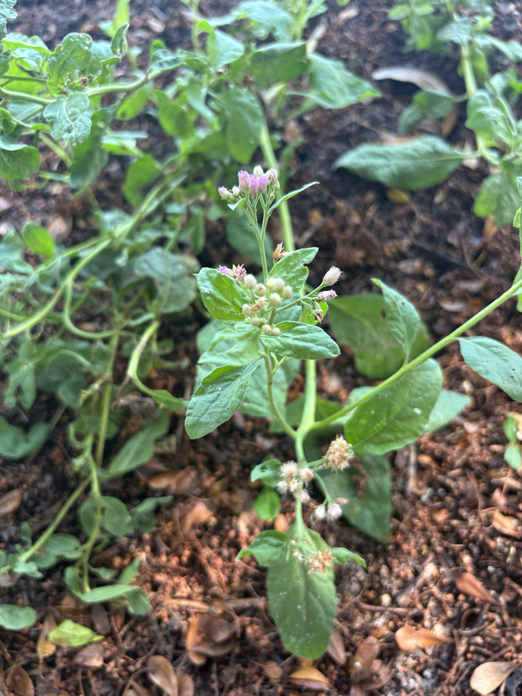

- The name 'fleabane' is a old-world folk claim that burning or strewing aromatic plants like this one would drive off fleas. Whether it works is doubtful, but the camphor-like scent is real — crush a leaf and you'll know immediately why this plant goes by camphorweed and sweetscent in the same breath.
- In parts of the Caribbean, a tea brewed from the leaves is a familiar household remedy — traditionally valued as a stimulant, diuretic, and antispasmodic. The plant has been used medicinally across the Americas and Africa for centuries.
- Every tiny flower in that flat-topped pink cluster is a disc floret — there are no ray florets at all. What looks like a fuzzy button is a dense head of dozens of individual tubular blooms, each one a potential nectar stop for a passing bee or skipper.
- Its late-summer bloom timing is part of what makes it ecologically useful: marsh fleabane is flowering and offering nectar at a moment when many other wildflowers have already gone to seed.
Marsh fleabane is native to the United States, Mexico, Central America, the Caribbean, and northern South America, with its core habitat in coastal wetlands and moist inland areas, often in saline or brackish substrates. In Florida it occurs naturally throughout the state, from panhandle marshes to coastal hammocks along both coasts.
The species also appears in western Africa and on certain Pacific Islands, likely through human-assisted dispersal over centuries of maritime trade. It has become a noxious weed in Hawaii and New Caledonia, where it arrived as an introduced plant — a reminder that even plants with valuable ecological roles at home can cause problems when moved outside their native range.
- The genus name Pluchea honors Noel-Antoine Pluche (1688–1761), a French abbé and popular natural-history writer whose 'Spectacle de la Nature' was one of the most widely read science books of the eighteenth century. The species epithet odorata simply means 'fragrant' — an accurate descriptor for a plant whose leaves emit a strong, resinous, camphor-like odor when handled.
- Marsh fleabane sits comfortably in the company of pickerelweed, spartina grass, and saltmeadow cordgrass in Florida's brackish and freshwater marsh edges. It tolerates periodic flooding and can grow in standing water, but it also establishes well in moist garden soils, making it a practical choice for rain gardens and wet-meadow plantings at the same latitude as Bradenton.
- The plant behaves as a short-lived perennial in Florida's mild climate, dying back in the coldest weeks of winter but re-sprouting from the roots or reseeding reliably in place.
- It spreads both by wind-dispersed seeds — each tiny achene carries a bristly pappus that acts as a parachute — and, in favorable conditions, by rhizomatous expansion, allowing it to gradually form loose colonies at wet margins.
Few native wetland plants deliver pollinator value as reliably in the late-season gap as marsh fleabane. The flat-topped clusters of rosy pink disc flowers are a magnet for bees and butterflies from midsummer through fall, when nectar sources in Florida marshes can be scarce.
Monarch butterflies, skippers, and a range of native bees visit regularly, and the common checkered skipper uses the plant as a larval host, laying eggs on the leaves so caterpillars can feed.
Beyond butterflies and bees, the dense upright stems provide cover and foraging structure for small insects, and the seeds — each tipped with a feathery pappus — are occasionally taken by birds. The plant's aromatic foliage is strongly deer-resistant, which in Florida's suburban-edge habitats is a real practical advantage.
Marsh fleabane spreads readily by seed, with each fruit carrying a bristly pappus that allows wind dispersal across wet areas. It also spreads slowly by rhizomes in favorable conditions, forming loose colonies over time. In cultivation it can be grown from seed or stem cuttings, and self-sown seedlings appear reliably around established plants.
The inflorescence is a broad, flat-topped cyme of many small flower heads, rosy pink to lavender-pink, clustered at the tips of the stems. Individual flower heads are less than half an inch across and contain only disc florets — no showy ray petals — giving the cluster a soft, fuzzy appearance. Bloom runs from summer through fall in Florida, with peak display in late summer.
Each fertilized floret produces a tiny, dry, one-seeded fruit (a cypsela, often called an achene) tipped with a bristly pappus of white hairs. The fruiting heads are inconspicuous but produce large numbers of seeds that disperse on the wind or by water.
Leaves are alternately arranged, ovate to lanceolate with toothed margins and a noticeably rough, glandular surface covered in fine hairs. They reach roughly two to four inches long and emit a strong camphor-like odor when crushed. This aromatic quality contributes to the plant's deer resistance.
Stems are erect, stiff, and branching in the upper portion, covered in fine hairs, and can reach three to six feet in height. The plant dies back in cold winters in Florida but re-sprouts from the root crown in spring.
Look for an upright, multi-stemmed plant with rough, toothed leaves — give one a pinch and you'll get that immediate camphor-and-sweetness scent. The flat-topped clusters of rosy pink flowers sit at the tips of the stems and are the most eye-catching feature from midsummer onward.
Up close, notice that the individual flower heads are entirely tubular; there are no ray florets, just a dense button of tiny disc flowers. In fruit, the heads take on a frizzy, white-plumed look as the pappus-tipped seeds wait for a breeze.
Marsh fleabane is not toxic to people or pets, but it is not a food plant in any conventional sense. A leaf tea has a long history of use in the Caribbean as a folk remedy — traditionally taken as a stimulant and for fevers — but any medicinal preparation should be approached with caution and is outside what a casual garden visit calls for.
The edibility level reflects that caution: consult a health professional before using any part of this plant medicinally. Handling the foliage is generally harmless, though the rough, glandular leaf surface may mildly irritate sensitive skin in some individuals.
Pluchea odorata was formerly listed under the synonym Pluchea purpurascens in some older references; the current accepted name is P. odorata. The Atlas of Florida Plants (USF) uses P. odorata as the accepted name, which is what you will find in FNPS, USDA PLANTS, and UF/IFAS sources.
Although marsh fleabane is well-behaved in Florida as a native plant, it is listed as a noxious weed in Hawaii and New Caledonia, where it was introduced and has spread aggressively. In its native Florida range it presents no such concern and is actively encouraged in wetland restoration plantings.


- © Randall Carter (CC-BY-NC), via iNaturalist
- © Hailee Alenduff (CC-BY-NC), via iNaturalist